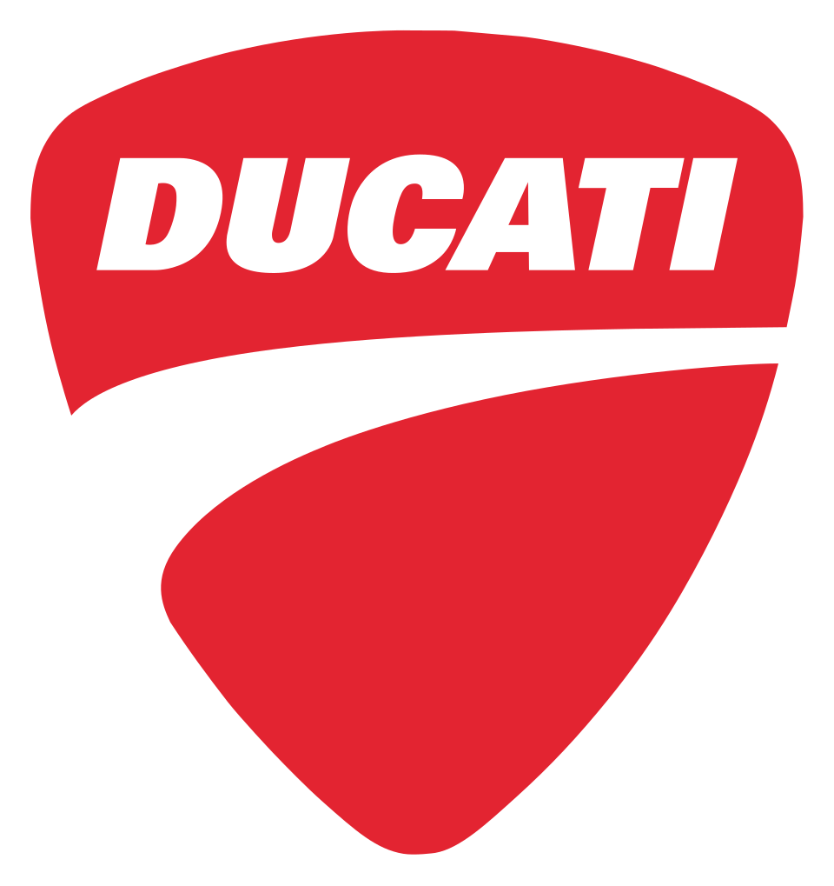

홈 > 브랜드 매거진 > 아우디
아우디
아우디는 모빌리티 브랜드로, 기술 신뢰, 이동 경험, 서비스 네트워크, 디자인 언어가 결합되는 영역입니다.
산업 분야 모빌리티 · 공개 등급 편집 검수 · 브랜드 평가 4.6 ★


한눈에 보는 브랜드
아우디는 모빌리티 브랜드입니다. 기술 신뢰, 이동 경험, 서비스 네트워크, 디자인 언어가 결합되는 영역으로 분류되며, 브랜드명과 업종, 운영 국가, 공개 로고 여부를 함께 보며 사전 항목의 기본 맥락을 확인할 수 있습니다.
브랜드 관점
아우디 항목은 단순한 이름 목록이 아니라 모빌리티 시장 안에서 어떤 역할을 하는지 읽기 위한 기준점입니다. 제품·서비스 범위, 유통 방식, 시각 아이덴티티, 시장 포지션을 함께 비교하면 같은 산업의 다른 브랜드와 차이가 선명해집니다.
시작과 성장
아우구스트 호르히가 1909년에 설립한 독일의 자동차 브랜드로 세단을 포함해 SUV, 스포츠카 등을 제조 · 판매함.
브랜드 아이덴티티
아우디의 아이덴티티는 브랜드명, 로고 사용 여부, 업종 언어, 국가적 배경을 중심으로 정리됩니다. 대표 로고 자산이 연결되어 있어 시각 식별자를 함께 검토할 수 있습니다.
제품과 서비스
아우디의 제품과 서비스는 모빌리티 범주에서 해석됩니다. 이 섹션은 상품군, 서비스 방식, 판매 채널, 사용 장면을 분리해 추적하기 위한 기본 설명이며, 추가 자료가 확보되면 대표 제품과 가격대, 시장별 차이까지 확장할 수 있습니다.
현재 상태
산업: 모빌리티
타임라인
BI/CI 변천사
함께 읽을 브랜드

모빌리티 · 편집 검수두카티두카티는 이탈리아의 모빌리티 브랜드로, 기술 신뢰, 이동 경험, 서비스 네트워크, 디자인 언어가 결합되는 영역입니다.
볼보는 스웨덴의 모빌리티 브랜드로, 기술 신뢰, 이동 경험, 서비스 네트워크, 디자인 언어가 결합되는 영역입니다.
메르세데스-벤츠는 독일의 모빌리티 브랜드로, 기술 신뢰, 이동 경험, 서비스 네트워크, 디자인 언어가 결합되는 영역입니다.
사브는 스웨덴의 모빌리티 브랜드로, 기술 신뢰, 이동 경험, 서비스 네트워크, 디자인 언어가 결합되는 영역입니다.
모빌리티 · 자료 기반피자헛피자헛는 모빌리티 브랜드로, 기술 신뢰, 이동 경험, 서비스 네트워크, 디자인 언어가 결합되는 영역입니다.
까르
까르푸
모빌리티 · 자료 기반까르푸까르푸는 프랑스의 모빌리티 브랜드로, 기술 신뢰, 이동 경험, 서비스 네트워크, 디자인 언어가 결합되는 영역입니다.
모빌리티 · 자료 기반EuromasterEuromaster는 프랑스의 모빌리티 브랜드로, 기술 신뢰, 이동 경험, 서비스 네트워크, 디자인 언어가 결합되는 영역입니다.
모빌리티 · 자료 기반MothercareMothercare는 영국의 모빌리티 브랜드로, 기술 신뢰, 이동 경험, 서비스 네트워크, 디자인 언어가 결합되는 영역입니다.